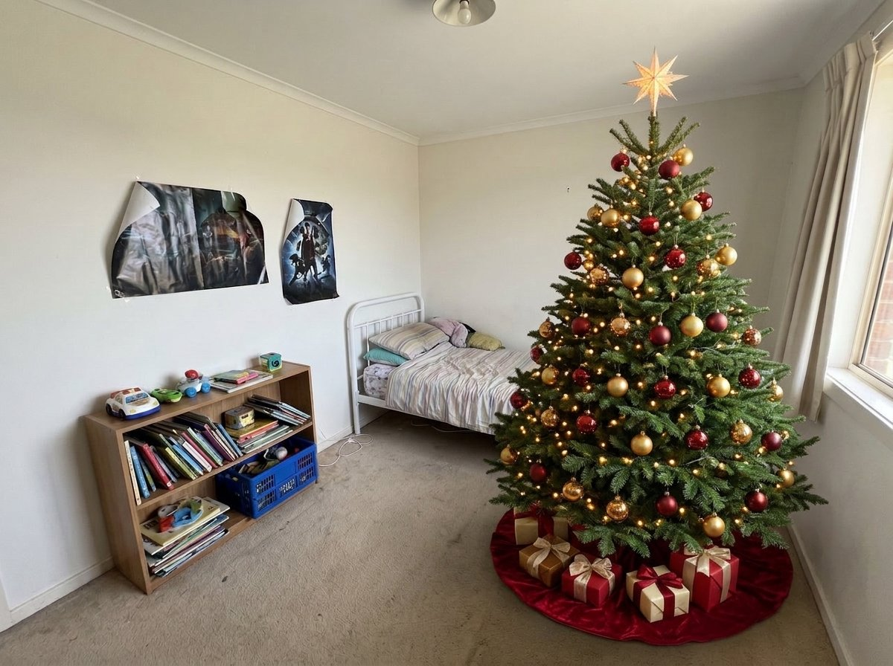
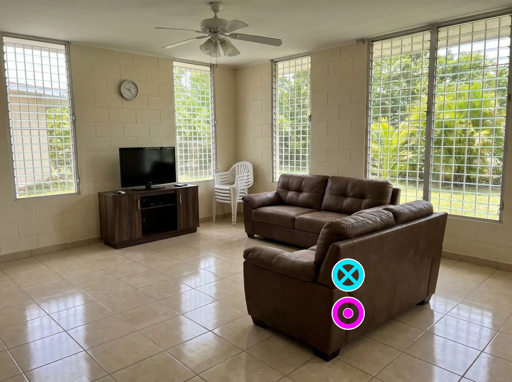
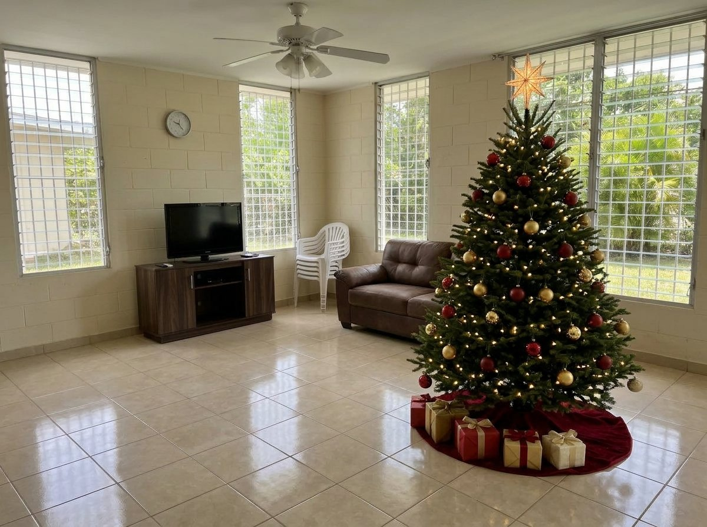
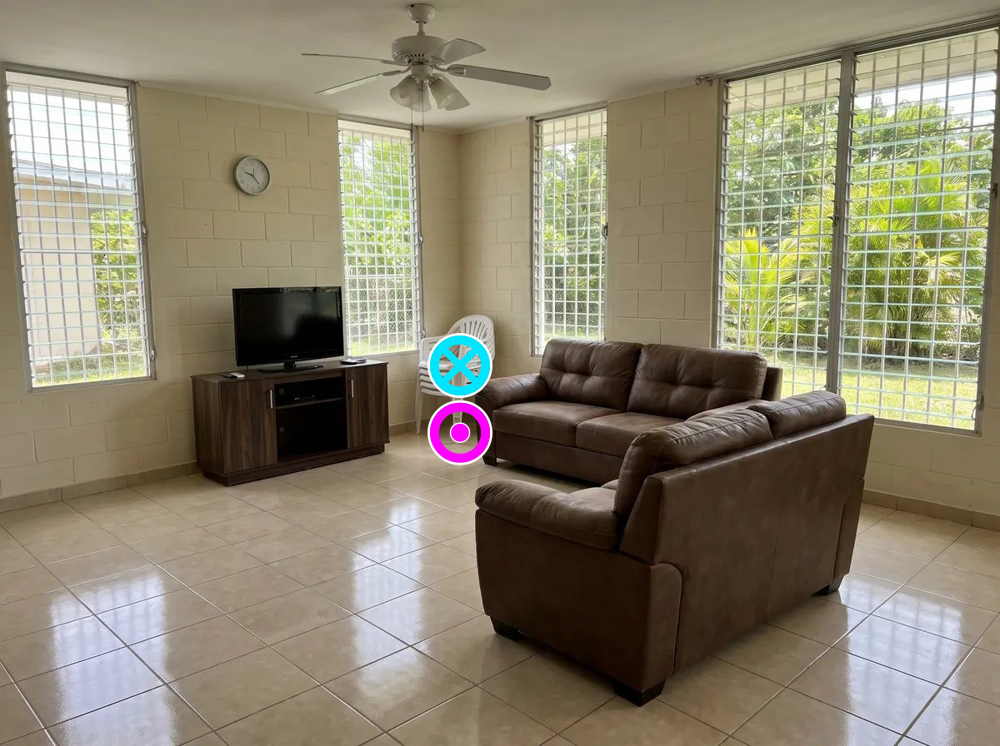
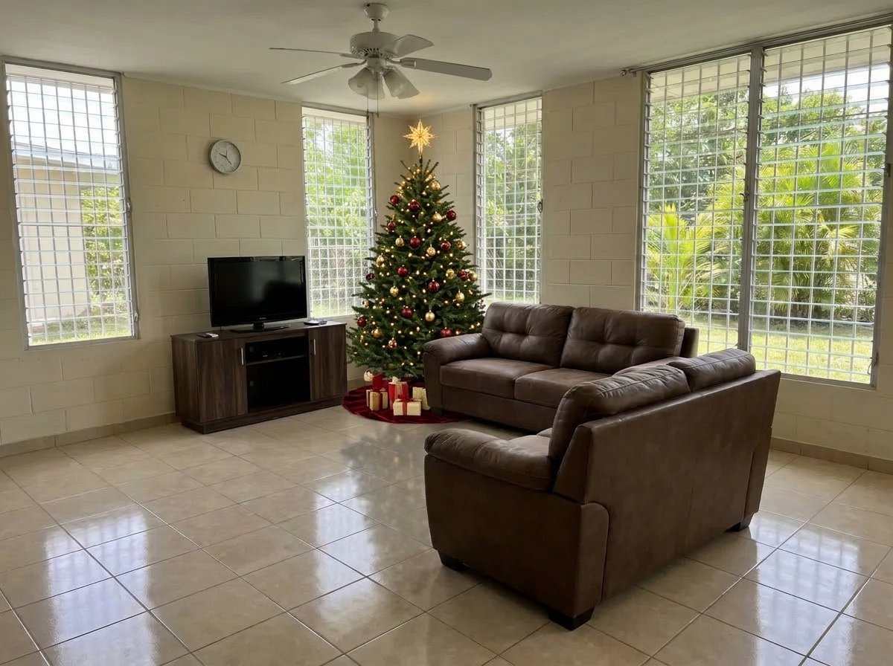
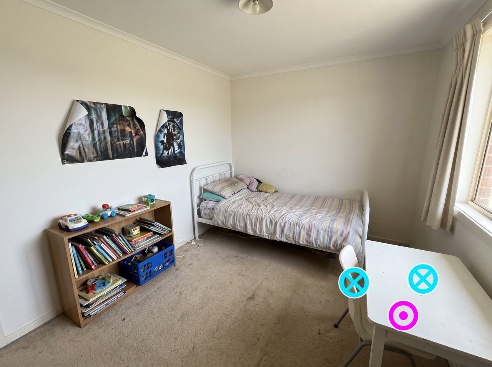
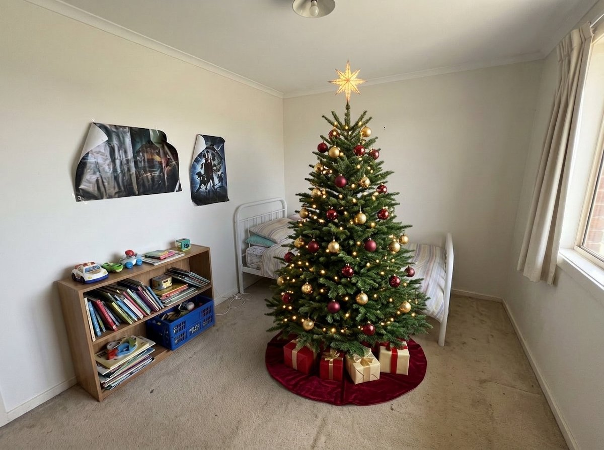
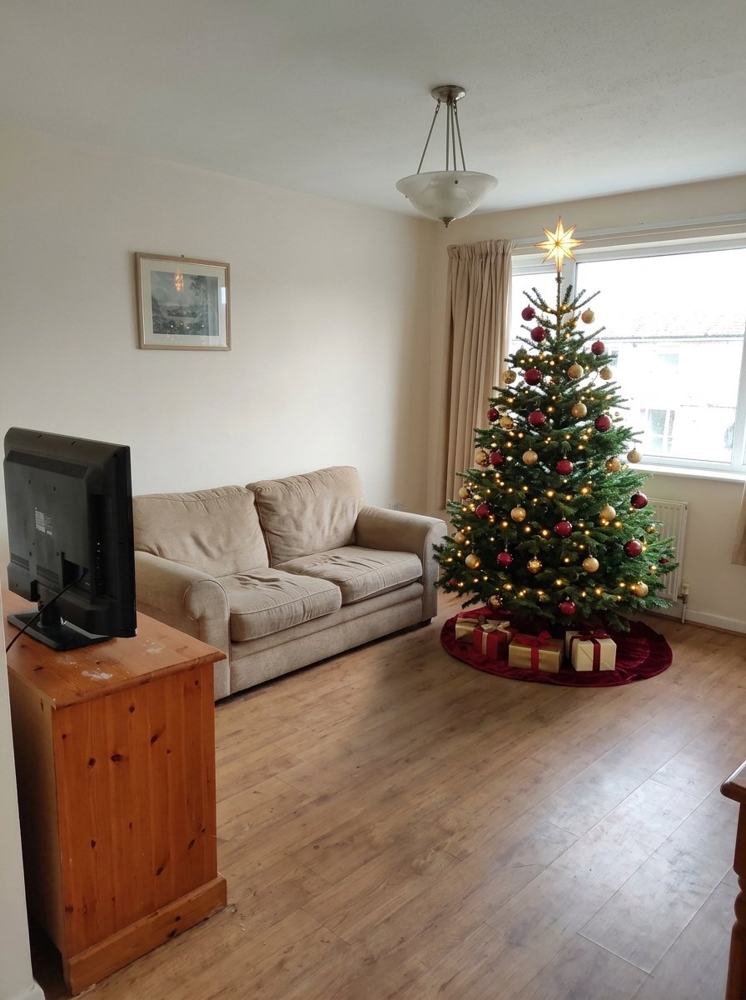
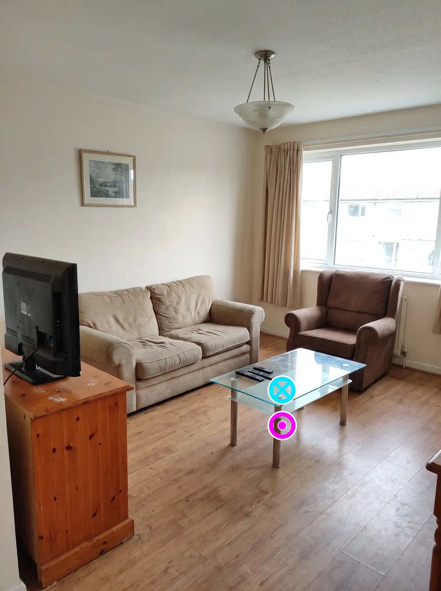
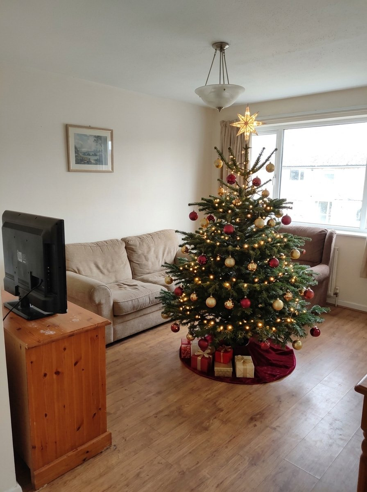

remove the front loveseat, tree where it stood


remove the stacked plastic chairs only


remove desk AND chair


remove the desk, KEEP the chair

remove the armchair by the window


remove the glass coffee table

